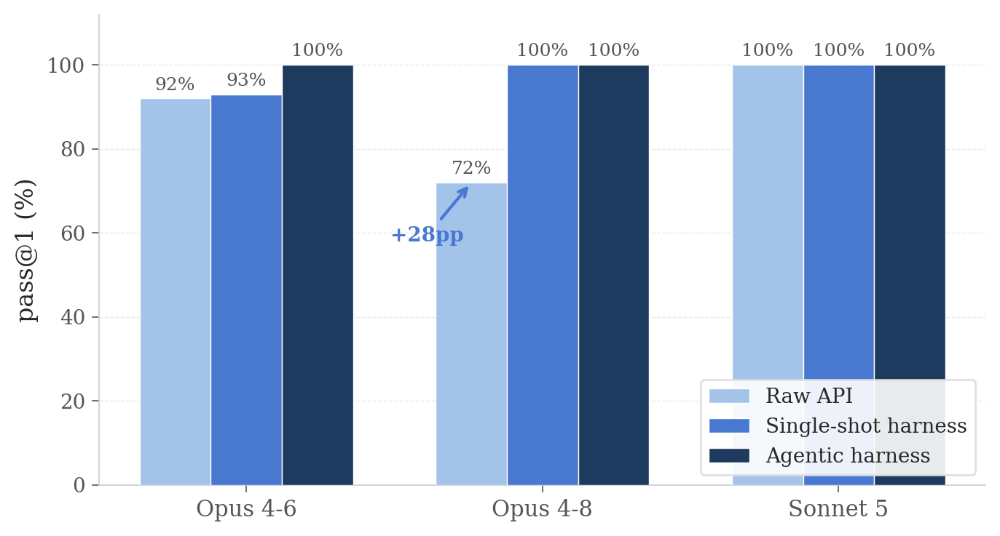
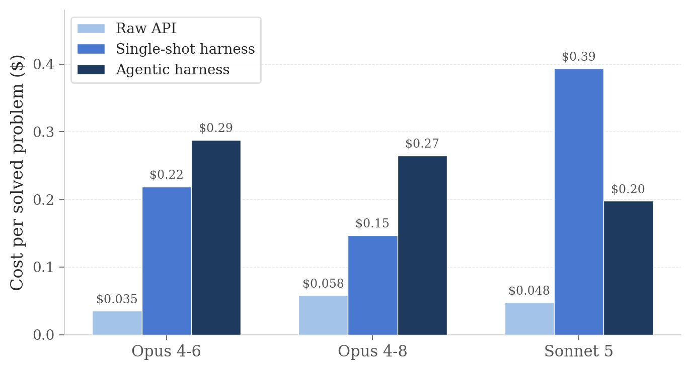
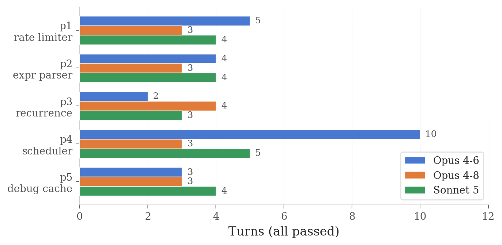

The Harness Tax
Production coding agents call language models through a harness — a system prompt, a catalog of tool schemas, a turn loop. We measure what that wrapper costs and what it buys. On five contamination-resistant problems, running the same models through Claude Code multiplied context 40–125× and per-run cost 5–8×; it lifted one model's pass@1 by 28 points and left already-strong models unchanged.
Introduction
Very little production inference reaches a model as a bare prompt. Coding assistants in particular wrap the model in a harness that supplies a long system prompt, tool definitions, permission machinery, and an execution loop, and the published numbers we use to choose between models — benchmark pass rates, price per token — describe the model alone. The wrapper's contribution, in either direction, is rarely measured.
This post measures it directly. We run the same five problems, with the same models at the same effort setting, in three configurations:
- Raw API. A single
messages.createcall; we extract the code block from the response and grade it. - Harness, single-shot. Claude Code in headless mode (
claude -p) with tools restricted toWrite: the model writessolution.pyand stops. This isolates the fixed cost of the harness — system prompt, tool schemas, turn loop, cache traffic — with no self-verification. - Harness, agentic. The full local toolset: the model may write scratch tests, run them, and revise until it is satisfied.
The difference between the first two configurations is what we call the harness tax (in tokens and dollars) and the harness lift (in pass rate). The difference between the second and third is the price and value of letting the model check its own work.
Benchmark design
A comparison like this is only informative if the problems are absent from training data; a memorized solution passes in every configuration and tells us nothing. The five problems were therefore generated with Claude Fable 5 as invented specifications: semantics constructed to be novel, so that solving them requires reading the spec rather than recalling it. They include an expression language ("Calc-26") with a midpoint operator and a deliberately unconventional precedence rule, a sliding-window rate limiter with weighted refund-on-reject semantics, a recurrence expander evaluated against real 2026 daylight-saving transitions, a fully determined greedy DAG scheduler, and a cache module with five planted bugs to find and fix.
| Problem | Tests for | Oracle |
|---|---|---|
| p1_rate_limiter | stateful invariants, boundary semantics | differential vs. brute-force reference on random streams |
| p2_expr_parser | precedence with a novel operator, adversarial spec quirk | random-AST differential + pinned spec examples |
| p3_recurrence | DST gaps/overlaps, half-hour zones | independent minute-scan around real 2026 transitions |
| p4_scheduler | deterministic multi-worker DAG simulation, tie-breaking | independent unit-time-step simulator |
| p5_debug_cache | find-and-fix 5 planted bugs, API preserved | independent list-based oracle + targeted units |
Table 1.The five problems and their grading oracles.
Grading is by automated oracle, mostly differential testing against an independent reference implementation on randomized inputs, so a solution passes only by implementing the specified semantics. For p1 and p2 the repository ships mutants — plausible but subtly wrong solutions — and harness/validate.py confirms the oracles reject them. Without that check a pass rate is only as meaningful as the tests behind it.
We test Opus 4-6, 4-7, and 4-8, and Sonnet 5, all with adaptive thinking at effort=high and default sampling parameters.3 The raw-API lane uses five samples per model–problem pair (100 runs); the single-shot harness lane uses three (45 runs, Claude Code 2.1.201, subagents disabled); the agentic lane uses one (15 runs), each in an isolated temporary workspace. Harness context is counted as input plus cache-creation plus cache-read tokens summed over all turns, as reported by Claude Code, and the overhead ratio divides that by the raw call's input tokens.1 Every result row and transcript is committed in the repository's results/ directory.
Results
The raw baseline
Table 2 summarizes the raw-API lane. Two observations stand out. First, within the Opus line, single-shot accuracy on these problems declines monotonically across releases: 92% for 4-6, 80% for 4-7, 72% for 4-8. The failures concentrate on p2 and p3 — the two problems whose specifications most directly contradict convention — and we return to them in the discussion. Second, Sonnet 5, the least expensive model tested, solved all 25 of its runs. It generates roughly four times the output tokens of Opus (it thinks longer), but at 40% of the token price the runs cost about the same.
| Model | pass@1 | p1 | p2 | p3 | p4 | p5 | Avg out tokens | Cost/solve |
|---|---|---|---|---|---|---|---|---|
| Opus 4-6 | 92% | 5/5 | 5/5 | 4/5 | 4/5 | 5/5 | 1,158 | $0.035 |
| Opus 4-7 | 80% | 5/5 | 3/5 | 2/5 | 5/5 | 5/5 | 1,016 | $0.037 |
| Opus 4-8 | 72% | 5/5 | 2/5 | 1/5 | 5/5 | 5/5 | 1,057 | $0.042 |
| Sonnet 5 | 100% | 5/5 | 5/5 | 5/5 | 5/5 | 5/5 | 4,643 | $0.048 |
Table 2.Raw-API baseline: one call per run, five samples per cell, effort=high. Output tokens include thinking.
What the harness adds
Figure 1 shows pass@1 across the three configurations for the models that ran all three.3 The pattern is simple: the harness helps the model that was struggling and does nothing for the models that were not. Opus 4-8 moves from 72% to 100% under the single-shot harness — its raw failures on p2 and p3 disappear entirely. Opus 4-6 moves one point; Sonnet 5 was already at the ceiling.
What makes the 28-point jump notable is that the single-shot harness gives the model no new capability. It cannot run tests or observe outputs; the only change is the surrounding frame — the system prompt and the discipline of writing a file rather than composing a chat response. Whatever the mechanism, the frame alone was worth 28 points to this model. In the agentic configuration, where models may write and run scratch tests before committing, every model reaches 100%.

Data table
| Model | Raw API | Single-shot | Agentic |
|---|---|---|---|
| Opus 4-6 | 92% | 93% | 100% |
| Opus 4-8 | 72% | 100% | 100% |
| Sonnet 5 | 100% | 100% | 100% |
What the harness costs
A raw call on these problems sends 400–1,000 input tokens. The same problem through the single-shot harness touches 36,000–71,000 context tokens per run: the system prompt and tool catalog are written to the prompt cache and then re-read on every turn of the loop. Figure 2 plots the ratio for each model and problem. The floor — roughly 36–46K tokens even on the smallest problem — is the fixed furniture; variation above it is extra turns compounding the cache reads.
The isolated point at 1,037× deserves comment. Two of Sonnet 5's three single-shot runs on p3 disregarded the instruction to write the file and stop, continued for thirteen turns, and accumulated as much as 1.02 million context tokens — a $2.94 run for a problem the same model solves raw for five cents.2 Both runs passed. This is the tax at its worst: the loop gives the model room to keep going, and the accounting bills every lap.

Data table
| Problem | Opus 4-6 | Opus 4-8 | Sonnet 5 |
|---|---|---|---|
| p1_rate_limiter | 73× | 48× | 76× |
| p2_expr_parser | 68× | 48× | 68× |
| p3_recurrence | 113× | 68× | 1,037× |
| p4_scheduler | 125× | 51× | 82× |
| p5_debug_cache | 84× | 38× | 59× |
Cost per run and cost per solve
Figure 3 gives the dollar view. Per run, the harness costs five to eight times the raw call.1 Per solved problem, however, the comparison inverts for the model the harness helps. At a 72% pass rate, Opus 4-8's raw lane wastes more than a quarter of its calls, and each failure costs whatever a retry or a human debugging session costs downstream; through the harness, every $0.15 run lands. For Sonnet 5 the same spend purchases nothing — it was already at 100% for a twentieth of the price. In the agentic lane, where Sonnet 5 can satisfy itself by running a test instead of re-deriving everything in context, it becomes the cheapest model measured, at $0.198 per problem.
The agentic lane
Agentic mode is where the harness earns its keep by a different mechanism: not a better frame, but the ability to check. Every model reached 100%, taking two to ten turns per problem (Figure 3). The ten-turn case — Opus 4-6 on the scheduler, whose tie-breaking rules must be matched exactly — shows the shape of agentic self-repair: write, test, find the tie-break wrong, fix, repeat, at a final cost of $0.44, fourteen times the raw call. On problems of this size, agentic mode is best understood as insurance: two to ten times the single-shot price, in exchange for a correctness guarantee that held across all fifteen runs.

Discussion
The tax is a property of the model–task pair
Forty to a hundred and twenty-five times the context sounds indefensible, and for a model already passing, it is — pure cost with no return. For Opus 4-8 the same overhead purchased 28 points of pass@1. Neither "harnesses are bloat" nor "harnesses are worth it" survives contact with the data; the trade is specific to the model and the task, and the only way to know which side of it you are on is to measure, which is what this repository is for.
The lift comes from the frame, not the tools
Opus 4-8's improvement occurred in a configuration where the model could not execute anything. The mechanism is therefore in the prompt: the harness's system prompt and the file-writing task framing changed how the model engaged with the specification. This is a cheap and, we suspect, underused knob — before reaching for a full agentic loop and its costs, it is worth asking how much of the benefit the frame alone provides.
Price and accuracy are separate axes
Sonnet 5, at two-fifths of Opus's token price, outscored every Opus release in the raw lane and was the cheapest route to 100% in the agentic lane. It spends its advantage in thinking tokens — about four times Opus's output — and the price difference absorbs that several times over. Choosing a model by price tier and assuming accuracy follows it would have produced the wrong answer here in both directions.
Novel specifications lose to training priors
The p2 expression language was constructed, by Fable 5, to contain a rule with no precedent in training data: unary minus binds tighter than exponentiation, so
-2 ^ 2 = 4under the specification, where nearly every programming language and mathematical convention gives-2 ^ 2 = -4.
In three of its five raw runs, Opus 4-8 read the specification and implemented the convention anyway; the oracle's pinned examples caught it each time. This is the cleanest failure signature in the benchmark: when a specification contradicts a strong prior, raw single-shot generation follows the prior. Both the harness frame and agentic self-testing corrected it — which suggests the remedy is not additional capability, but anything that forces a second reading.
Limitations
The usual cautions apply, and a few specific ones. The sample sizes are small — five problems, three to five samples per cell, one in the agentic lane — so differences of less than about ten points should not be taken seriously; this is a signal and a method, not a leaderboard. We measured one harness at one version (Claude Code 2.1.201, subagents disabled), and both the fixed cost and the frame will differ across harnesses and versions. Cost accounting differs by lane.1 Finally, contamination resistance forces the problems to be small, spec-dense, and self-contained — precisely the regime where a raw call is viable at all. On large-codebase tasks the raw lane does not exist, and the harness tax is simply the price of entry.
Reproducing these results
git clone https://github.com/igniting/harness-tax && cd harness-tax
pip install -r requirements.txt
export ANTHROPIC_API_KEY=sk-...
# prove the oracles kill the mutants (no API needed)
python3 harness/validate.py
# raw API baseline
python3 harness/runner.py --models claude-opus-4-6 claude-opus-4-8 claude-sonnet-5 \
--samples 5 --effort high --out results/run1.jsonl
# harness, single-shot and agentic
npm install -g @anthropic-ai/claude-code
python3 harness/cc_runner.py --models claude-opus-4-6 claude-opus-4-8 claude-sonnet-5 \
--samples 3 --subagents deny
python3 harness/cc_runner.py --models claude-opus-4-6 claude-opus-4-8 claude-sonnet-5 \
--samples 1 --agentic --subagents deny
# compare
python3 harness/cc_report.py results/cc_results.jsonl results/run1.jsonl- Raw-lane cost is computed from list prices (Opus: $5/$25 per MTok in/out; Sonnet 5: $2/$10). Harness-lane cost is Claude Code's self-reported
total_cost_usd, which includes cache-write premiums and cache-read discounts, so the two lanes are priced by different accounting. ↩ - The two runs took 13 turns each, accumulating 638,779 and 1,016,995 context tokens at $1.13 and $2.94 respectively; both produced passing solutions. Sonnet 5's other thirteen single-shot runs completed in the normal two turns. ↩
- Opus 4-7 was dropped after the raw baseline to limit spend; its raw profile (80%, failures on p2 and p3) sits between 4-6 and 4-8. ↩